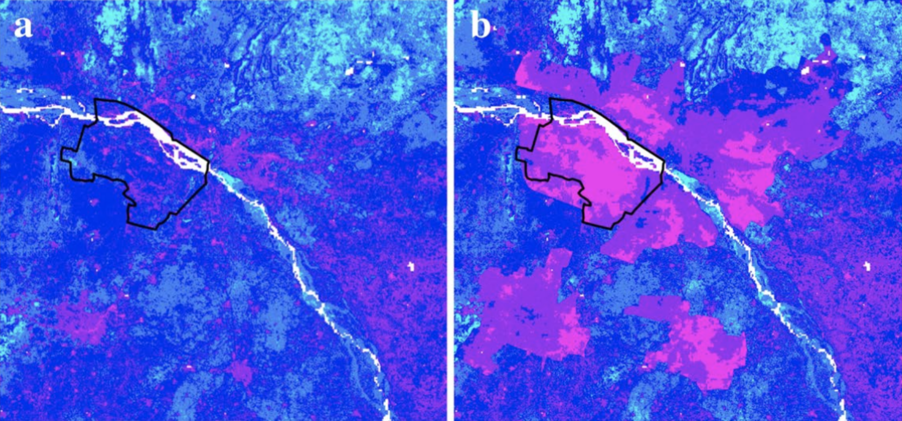
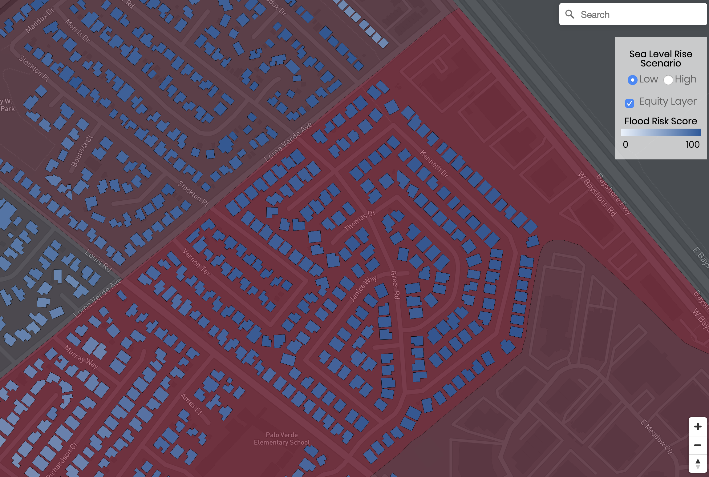
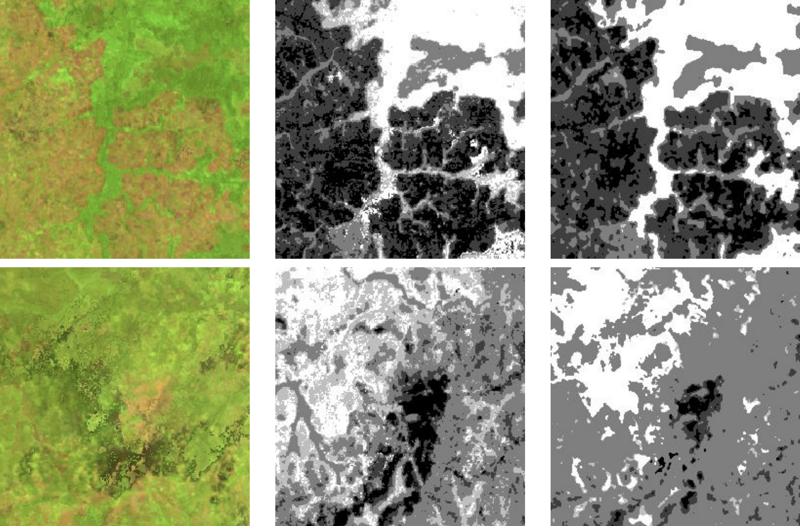

<!DOCTYPE html>
<html lang="en-US">

<head>
	<title>Avery</title>
	<meta name="viewport" content="width=device-width, initial-scale=1.0">
	<meta name="description" content="Avery's Portfolio">
	<link rel="shortcut icon" href="/AveryBickLogo.jpg" id="favicon">
	<link href="./css/style.css" rel="stylesheet" type="text/css"/>
	<link rel="stylesheet" href="https://fonts.googleapis.com/css?family=Didact+Gothic">
    <meta name="og:image" itemprop="image primaryImageOfPage" content="/AveryBickLogo.jpg">

	<style type="text/css">
	a:link {color:#50afe5;}    /* normal link */
	a:visited {color:#166592;} /* visited link */
	a:hover {color:#004E99;}   /* mouse over link */
	a:active {color:#fe0000}   /* selected link */
	</style>

</head>

</html>

<body>
	<div class="section" id="bio">
	<h1>Environmental</h1>

<hr>
	<h2 id="publications">Publications</h2>
<hr>
	<i><h3>Rising seas, rising inequity? Communities at risk in the San Francisco Bay Area </h3></i>

<p style="float:right;">(Lead Author, Publication in Submission)</p>

<br>
<br>
<br>
<p>This paper is the culmination of three years of research through Stanford's <a href="https://bay.stanford.edu/">Future Bay Initiative</a> and <a href="https://sigma.stanford.edu/">SIGMA Lab</a>. During my two years as teaching assistant within the Future Bay program, I participated in collaborative research on sea level rise resilience in the San Francisco Bay Area with students, Stanford staff, local governments, and community groups. Community feedback indicated a need for quantitative research not only on risk of sea level rise to buildings, but on cascading socioeconomic impacts. My coauthor Adrian and I developed a risk framework we dubbed the Stanford Urban Risk Framework (SURF) based on the work done in the course. Given flood maps, building footprints, tax assessor parcels, and a number of federal government data sources, the SURF model estimates average annual losses from sea level rise across <a href="https://en.wikipedia.org/wiki/Representative_Concentration_Pathway">Representative Concentration Pathway projections</a>. It also projects losses to household income across income brackets. We apply Monte Carlo methods to quantify uncertainty in building damages and a Random Forest Classifier to predict number of floors in buildings.

<br>
<br>
<hr>

<i><h3>When Floods Hit the Road: Resilience to Flood-Induced Commute Disruption in the San Francisco Bay Area and Beyond</h3></i>

<p style="float:right;">(Supporting Author, Publication in Submission)</p>

<br>
<br>
<br>
<p>This paper also comes out of the Stanford Future Bay Program. It investigates how increasing sea levels and coastal flooding could impact commute times in the San Francisco Bay Area, and which regions in particular are vulnerable. I assisted the authors through developing ArcPy code to correct road network shapefiles and identified areas of false positives for flooding.</p>

<br>
<br>
<hr>

<i><h3>Applying fuzzy logic to open data for sustainable development decision-making: a case study of the planned city Amaravati</h3></i>

<p style="float:right;">(Lead Author, Published in <i>Natural Hazards</i>)</p>

<br>
<br>
<br>

<p>Abstract:</p>
<br>
<p>The Indian State of Andhra Pradesh is in the process of designing and constructing a planned capital city on the southern banks of the Krishna River at Amaravati. This region will see a significant increase in urban land cover and impervious surface area (ISA) under the 2050 draft perspective plan from the Andhra Pradesh Capital Region Development Authority. As the city central zone sits on the former floodplain of the Krishna River and is subject to concentrated rainfall during monsoon seasons—this increase in ISA risks increasing flood risk through preventing infiltration of storm water and causing increased peak storm water flow. The State has announced plans for a “zero-flooding city” through implementation of technologies including green roofs, porous pavement, and detention ponds. This study aims to facilitate these efforts through mapping of present and future land usage, regional flood risk, and environmental services utilizing open-source data in order to maximize efficiency of installed green infrastructure and minimize future flood damages. A map of relative soil infiltration capacity was created through fuzzy overlay of sand percentage, clay percentage, and bulk density at several depths. Relative flood risk maps for both present-day land cover and a 2050 scenario were developed using several factors: elevation, flow accumulation, surface runoff, and soil properties. A novel Relative Environmental Services Provided Index is proposed here to in order to encourage cost-effective and ecologically sound development through composite visualization of carbon storage, greenery, runoff coefficients, and soil flood prevention.</p>
<br>
<p><i><a href="https://www.researchgate.net/publication/322708213_Applying_fuzzy_logic_to_open_data_for_sustainable_development_decision-making_a_case_study_of_the_planned_city_Amaravati">Full Text Here</a></i><p>
	<br>


<br>
<p class="center">Figure 7a & 7b - Relative flood risk in Amaravati capital region in 2016 (left) and projected for 2050 (right). Pink and blue represent high and low relative risk, respectively.</p>

<hr>

<h2 id="Other Work">Other Projects</h2>

<hr>

<i><h3>HighTide Resilience Sea Level Rise Risk Platform</i></h3>
<br>

<p> My startup <a href="https://hightide.ai/">HighTide</a> has released a <a href="https://hightide.ai/resilience">prototype sea level rise risk platform</a> as part of our submission for the <a href="https://opportunity.census.gov/"> U.S. Census Oppourtunity Project</a> competition. This platform builds off of the SURF model developed through Stanford Future Bay Initiative and shows a relative flood risk score as well as impacts on household income across income brackets at the Census block group scale. Our initial analysis shows Santa Clara County, California and we plan to expand our analysis first to all counties in the San Francisco Bay Area, then to the full coastal United States.

<br>


<p class="center">Screenshot from HighTide Resilience platform.</p>

<br>
<br>
<hr>

<i><h3>Deep Learning and Forest Boundary Mapping</i></h3>

<p> As part of Stanford Course CS230 Deep Learning, my project team developed a land cover classifier for tracking of deforestation using a convolutional neural network. We tested a binary (forest/no forest) classifier on manually-classified Rapideye imagery and recieved a 96% pixel accuracy. On a multi-class forest density classifier on LANDSAT data, we reached a 72% pixel accuracy. During this project we worked closely with a Stanford PhD student studying deforestation and rates of human-ape interactions in Uganda. With further refinement, such a model could be used for automatic analyses of land cover change using frequently updated satellite imagery.</p>
<br>
<p><i><a href="./img/Final-Poster.pdf">Poster</a></i></p>
<br>


<br>
<p class="center">Multi-class forest density classification (left to right: image, label, classification).</p>


<div class="section bottom-menu"><hr/>
	<p>
		<a href="./index.html">home</a>
		<a href="./about.html">about</a>
		<a href="./environmental.html">environmental</a>
		<a href="./audiovisual.html">audiovisual</a>
	</p><
</div>

</body>